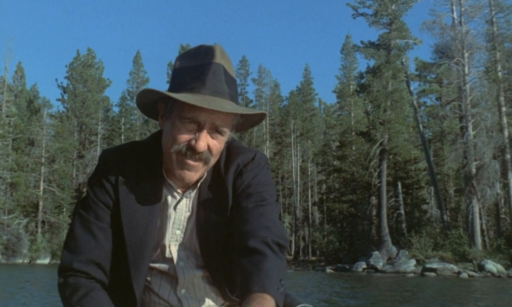

background-blend-mode ile yapabildigimiz her seyi istedigimiz elemanlarla yapmamizi saglayan sokuk ie nin desteklemedigi css ozelligi :)
Simdi bunu orneklerle gorelim!
Ornek 1:
Baudelaria
Text iceren elemana vermek istedigimiz mix-blend-mode ozelligini verdigimizde ikisini bir birine yedirme islemi yapmaktadir.(Bir yedirmeyle daha basbasayiz!)
Ornek 2:

I don't know whether I'm alive and dreaming or dead and remembering.
Ornek 3:
CORUM
Diyebilirsin?
Nerden anliyacagiz hangisini kullanacagimizi kardes.
Bu ozellikler direk photoshop ozellikleri oldugu icin tasarimda bu boka benzer seyler gordugunde tikla!
Sag tarafta bu ozelliklerin hangisi kullanildiysa onu gosterecektir.
Not: Photoshop un turkceyse sictin :)
Yapabilirsin?
Gordugun orneklerdeki gibi her turlu yedirme islemi!